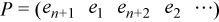

Intel® oneAPI Math Kernel Library Developer Reference - Fortran
Computes the SVD of a bidiagonal matrix.
call sbdsvdx (uplo, jobz, range, n, d, e, vl, vu, il, iu, ns, s, z, ldz, work, iwork, info )
call dbdsvdx (uplo, jobz, range, n, d, e, vl, vu, il, iu, ns, s, z, ldz, work, iwork, info )
?bdsvdx computes the singular value decomposition (SVD) of a real n-by-n (upper or lower) bidiagonal matrix B, B = U * S * VT, where S is a diagonal matrix with non-negative diagonal elements (the singular values of B), and U and VT are orthogonal matrices of left and right singular vectors, respectively.
Given an upper bidiagonal B with diagonal d = [d1d2 ... dn] and superdiagonal e = [e1e2 ... en - 1], ?bdsvdx computes the singular value decompositon of B through the eigenvalues and eigenvectors of the n*2-by-n*2 tridiagonal matrix
If (s,u,v) is a singular triplet of B with ||u|| = ||v|| = 1, then (±s,q), ||q|| = 1, are eigenpairs of TGK, with , and .
Given a TGK matrix, one can either
compute -s, -v and change signs so that the singular values (and corresponding vectors) are already in descending order (as in ?gesvd/?gesdd) or
compute s, v and reorder the values (and corresponding vectors).
?bdsvdx implements (1) by calling ?stevx (bisection plus inverse iteration, to be replaced with a version of the Multiple Relative Robust Representation algorithm. (See P. Willems and B. Lang, A framework for the MR^3 algorithm: theory and implementation, SIAM J. Sci. Comput., 35:740-766, 2013.)
CHARACTER*1. = 'U': B is upper bidiagonal;
= 'L': B is lower bidiagonal.
CHARACTER*1. = 'N': Compute singular values only;
= 'V': Compute singular values and singular vectors.
CHARACTER*1. = 'A': Find all singular values.
= 'V': all singular values in the half-open interval [vl,vu) are found.
= 'I': the il-th through iu-th singular values are found.
INTEGER. The order of the bidiagonal matrix.
n >= 0.
REAL for sbdsvdx
DOUBLE PRECISION for dbdsvdx
Array, size n.
The n diagonal elements of the bidiagonal matrix B.
REAL for sbdsvdx
DOUBLE PRECISION for dbdsvdx
Array, size (max(1,n - 1))
The (n - 1) superdiagonal elements of the bidiagonal matrix B in elements 1 to n - 1.
REAL for sbdsvdx
DOUBLE PRECISION for dbdsvdx
vl≥ 0.
REAL for sbdsvdx
DOUBLE PRECISION for dbdsvdx
If range='V', the lower and upper bounds of the interval to be searched for singular values. vu > vl.
Not referenced if range = 'A' or 'I'.
INTEGER. If range='I', the indices (in ascending order) of the smallest and largest singular values to be returned.
1 ≤il≤iu≤ min(m,n), if min(m,n) > 0.
Not referenced if range = 'A' or 'V'.
INTEGER. The leading dimension of the array z.
ldz≥ 1, and if jobz = 'V', ldz≥ max(2,n*2).
ns |
INTEGER. The total number of singular values found. 0 ≤ns≤n. If range = 'A', ns = n, and if range = 'I', ns = iu - il + 1. |
s |
REAL for sbdsvdx DOUBLE PRECISION for dbdsvdx Array, size (n) The first ns elements contain the selected singular values in ascending order. |
z |
REAL for sbdsvdx DOUBLE PRECISION for dbdsvdx Array, size (2*n, k) If jobz = 'V', then if info = 0 the first ns columns of z contain the singular vectors of the matrix B corresponding to the selected singular values, with U in rows 1 to n and V in rows n+1 to n*2, i.e. z = If jobz = 'N', then z is not referenced. NoteMake sure that at least k = ns+1 columns are supplied in the array z; if range = 'V', the exact value of ns is not known in advance and an upper bound must be used. |
work |
REAL for sbdsvdx DOUBLE PRECISION for dbdsvdx Array, size (14*n) |
iwork |
INTEGER. Array, size (12*n). If jobz = 'V', then if info = 0, the first ns elements of iwork are zero. If info > 0, then iwork contains the indices of the eigenvectors that failed to converge in ?stevx. |
info |
INTEGER. = 0: successful exit. < 0: if info = -i, the i-th argument had an illegal value. > 0: if info = i, then i eigenvectors failed to converge in ?stevx. The indices of the eigenvectors (as returned by ?stevx) are stored in the array iwork. if info = n*2 + 1, an internal error occurred. |